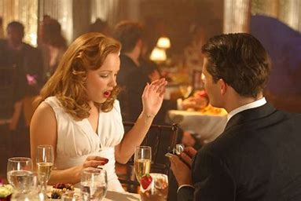

"The Notebook," a cinematic masterpiece that has touched the souls of countless viewers around the globe.
Within the ethereal pages of this film, we are transported to a bygone era, where love knows no boundaries and passion conquers all.
Adapted from the heartwarming novel by Nicholas Sparks, "The Notebook" weaves a tale of love's enduring power, entwining destiny, and the undeniable magic of fate.
Prepare to be captivated by a love story that spans generations, as we follow the lives of two soulmates, Noah and Allie, whose paths collide in a breathtaking romance that transcends time. As the pages of their lives unfold before us, we witness the exhilarating highs and heart-wrenching lows of their love, which stand as a testament to the resilience of the human heart.With its beautiful cinematography and a soundtrack that tugs at your heartstrings, "The Notebook" has all the elements of a memorable movie experience. Whether you're a fan of romantic dramas or just in the mood for a touching story, this film is a must-watch.
Directed by - Directed by: Nick Cassavetes
Based on: The novel "The Notebook" by Nicholas Sparks
Produced by: Mark Johnson, Lynn Harris
Distributed by: New Line Cinema
Budget: Approximately $30 million USD
Worldwide Box Office Gross: Approximately $115 million USD
Awards won
Best Kiss: Ryan Gosling and Rachel McAdams (won)
Choice Movie Actor: Drama/Action Adventure - Ryan Gosling (won)
Choice Movie Actress: Drama/Action Adventure - Rachel McAdams (won)
Best Original Song: "The Notebook Main Title" by Aaron Zigman (won)
"The Notebook" follows the captivating love story of Noah Calhoun and Allie Nelson, two young people from different social backgrounds who fall deeply in love one summer. Their passionate romance encounters opposition from Allie's upper-class parents, leading to their separation. Despite the odds, Noah's unwavering devotion and heartfelt letters keep the memory of their love alive.
Years later, fate reunites Noah and Allie, but they must grapple with the complexities of the past and the choices that have shaped their lives. As they revisit their shared memories, the power of their love resurfaces, igniting a heartrending journey of rediscovery and reconciliation. "The Notebook" weaves a tender and emotional narrative of enduring love that transcends time, reminding audiences of the timeless beauty of true romance.
Behind the scenes

Behind the scenes of "The Notebook," the 2004 romantic drama film based on Nicholas Sparks' novel, offered fascinating insights into the making of this emotional cinematic journey. Director Nick Cassavetes skillfully crafted a world that blended the past and present, focusing on capturing raw emotions and intimate moments between the characters. The casting process played a crucial role in bringing the characters of Noah and Allie to life, with Ryan Gosling and Rachel McAdams delivering powerful performances that brought their passionate love story to the forefront.
The film's authentic period feel was achieved through careful location selection in South Carolina, which perfectly complemented the nostalgic ambiance of the story. Makeup artists expertly aged the actors to convincingly portray the characters' aging over several decades. The movie's impact on pop culture is undeniable, as it quickly became a beloved classic, cherished for its genuine portrayal of enduring love and powerful storytelling. From the director's vision to the meticulous attention to detail, "The Notebook" stands as a testament to the dedication of the cast and crew in bringing this beautiful love story to life on the silver screen.
DID YOU KNOW?
"The Notebook" is based on the novel of the same name by Nicholas Sparks, who was inspired by the real-life love story of his wife's grandparents.
The beautiful house featured in the film, known as the "Waverley Mansion," is a real historic home located in the Windsor Plantation near Jackson, Mississippi. It provided the perfect backdrop for many scenes in the movie.
The famous rain scene, where Noah and Allie passionately kiss in the pouring rain, was not originally scripted. Ryan Gosling suggested the idea, and the crew decided to film it spontaneously, resulting in one of the movie's most iconic and memorable moments.